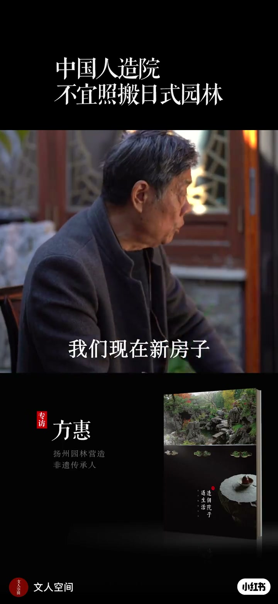
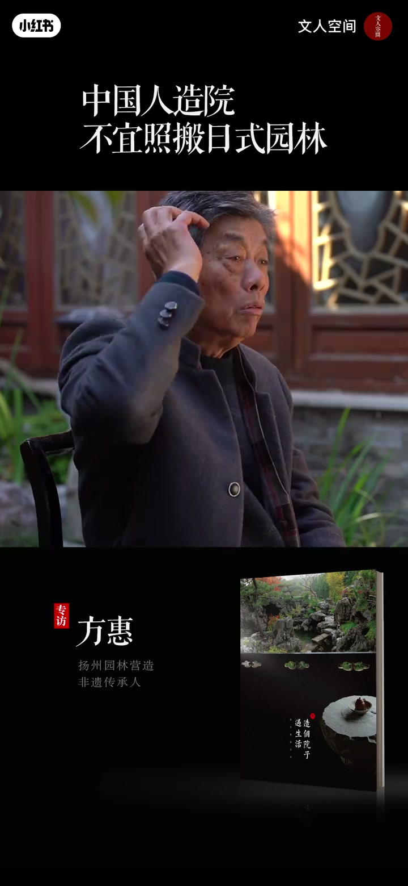
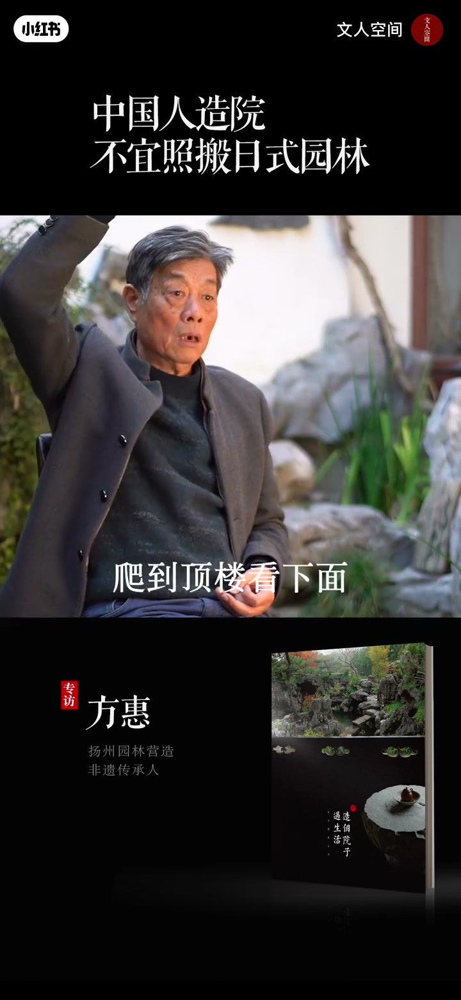
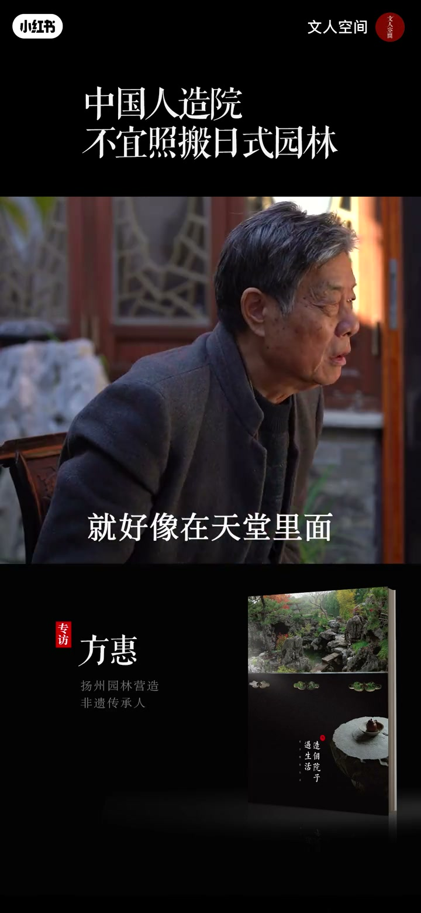

内容要点
「文人空间」专访扬州园林营造非遗传承人方惠：中国人造院不宜照搬日式园林。中段谈主流审美与元素联系，并以扬州住院夜登顶楼俯视人间的体验，描述中式院子要的「天上人间」对照感。Whisper 对园林术语误识严重（「杀鸡」等），叙述以画面字幕与可辨口播为准。
知识结构
标题卡：中国人造院不宜照搬日式园林；嘉宾方惠。
谈主流审美风格；「三个东西联系起来以后」等字幕，强调元素关系而非样式搬运。
扬州住院夜爬顶楼：四面漆黑安静如在空中，路灯与角落人流对照，像天堂看人间。
造院先问中式空间要什么体验（联系、俯仰、闹静对照），而不是先搬日式符号。
00:00-01:00不宜照搬：审美与元素联系
片头标题即论点。嘉宾名片：方惠，扬州园林营造非遗传承人；配书《造个院子 过生活》类封面。开场口播可辨大意：日式园林逻辑不宜直接套进中国人造园。
中段字幕出现「主流的审美风格」「虎渡子」「三个东西联系起来以后」等——依据画面重建：重点在把若干要素联成活的关系，而不是抄一个看起来「很日式」的造型清单。00:05–01:00 口播 ASR 大面积不可用。


01:00-01:35顶楼俯视：天堂看人间的院子感
方惠讲前两年在扬州住院睡不着，爬到顶楼往下看：四面漆黑安静，人好像悬在空中；灯光几乎没有，只剩马路灯，某个角落却人来人往——有人形容这是天堂里看人间，人间热闹而一切又空。
他用这段身体记忆收束中式空间要的对照与意境。片尾专有名词 ASR 作「杀鸡」，无法核验确切术语，故不强行定名，只保留可核验的体验描述。


完整转录（19段）
以下文本由 Whisper medium 模型自动转录，可能存在少量识别误差，已尽可能修正。
日本元凌在中国人造园当中是不适和
人家讲话讲的叫盛
盛的话,什么叫杀鸡腹?
前两年,在扬州住院睡不著
一个人就起来晃吧
爬到顶楼看下面
四面全是去黑的,安静的不得了
好像我整个人是在空中了
我向下看的时候
所有的灯光都没有了
这有马路上的路灯
某一个角落,人来人往的
这种感觉,有的人看到
人在这种状态下
你看到那个东西的时候
他们在天堂里面看人间
人间很多老,一切都是空的
我告诉你,这就叫做
杀鸡